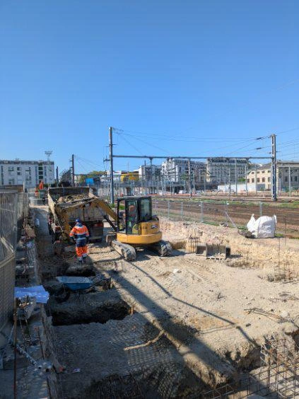
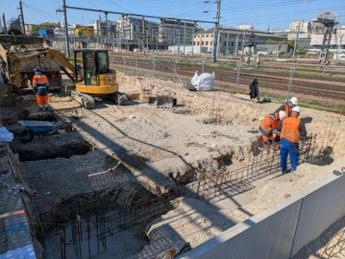
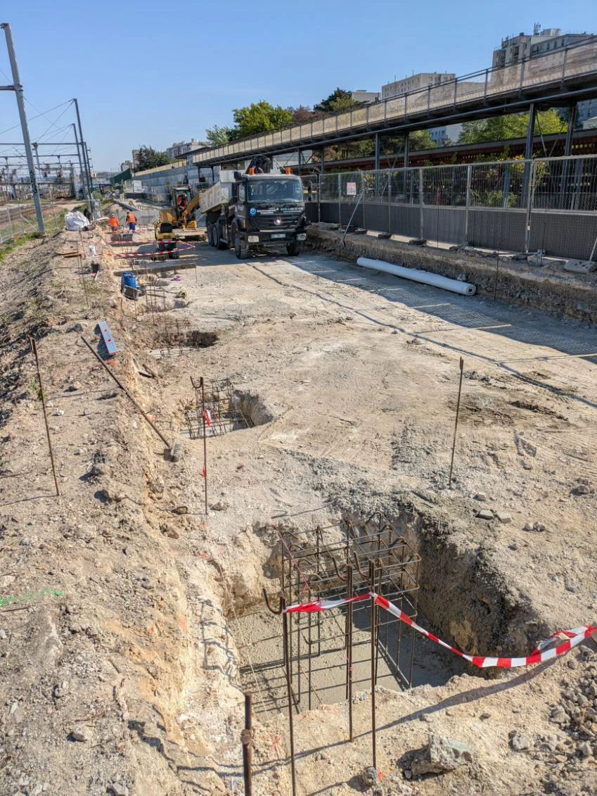
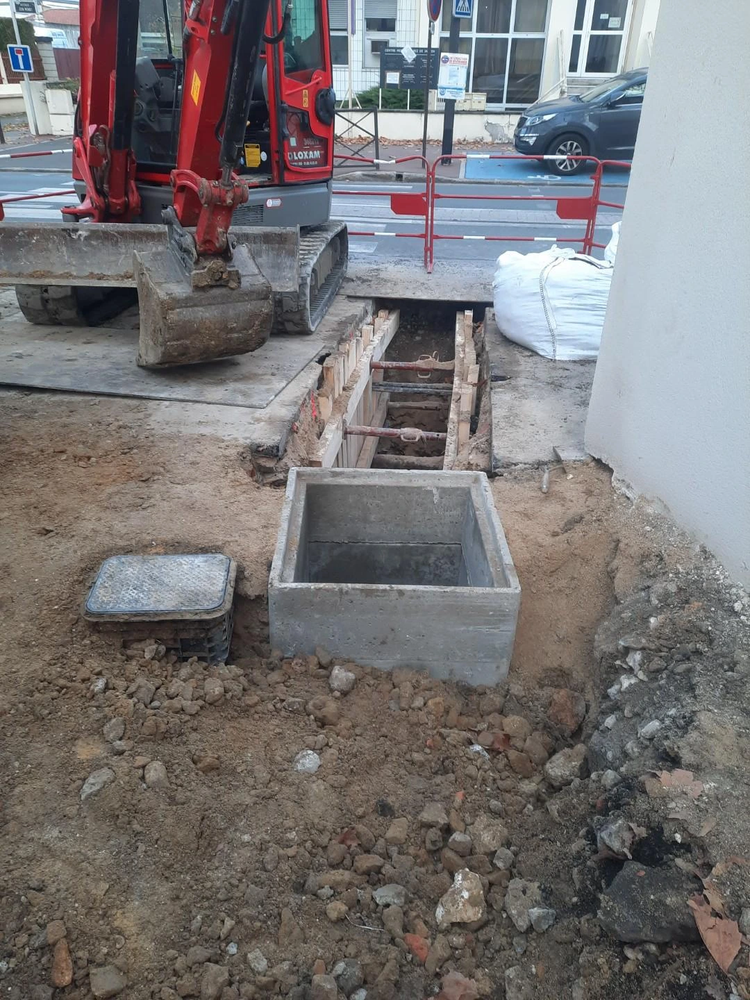
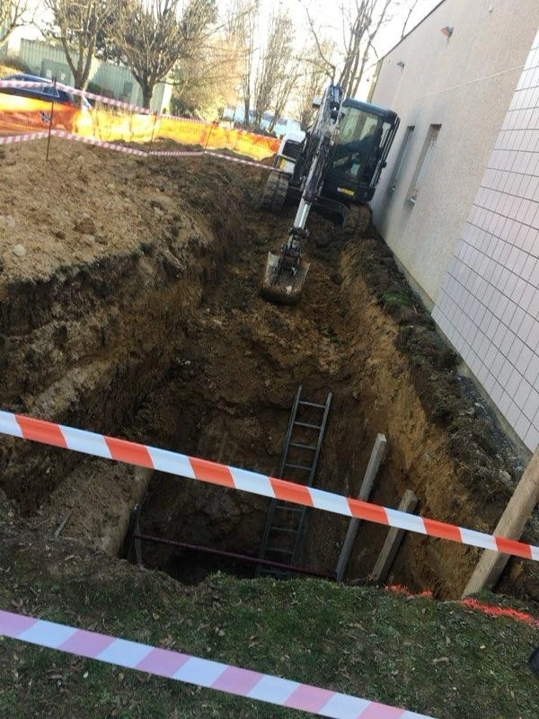

Solutions d’assainissement en Essonne (91)
Pour vos travaux d’assainissement en Essonne, faites appel à Assainissement 91 : vidange de bac à graisse, débouchage de canalisation, inspection vidéo. Nous proposons des interventions sur mesure dans tout le 91, aussi bien pour les urgences que dans le cadre de l’entretien régulier de vos réseaux. Grâce à notre matériel spécialisé et notre expérience terrain, nous vous garantissons un travail soigné, rapide et conforme à vos exigences.
NOS VEHUCULES


RÉALISATIONS






UN SAVOIR-FAIRE RECONNU EN ESSONNE (91)
En Essonne, Assainissement 91 met à votre disposition une équipe formée aux interventions surbacs à graisse, débouchage et inspection des canalisations par caméra. Nos professionnels diplômés s’engagent à offrir un service propre, rapide et durable. Faites confiance à une équipe locale, sérieuse et équipée pour répondre à toutes vos urgences en assainissement dans le 91.
NOTRE ÉQUIPE
CONTACTEZ - NOUS
IDF Assainissement 91
QUESTIONS SUR NOTRE ENTREPRISE
Notre entreprise dispose d'une solide experience dans le domaine de l'assainissement en Essonne. Nos equipes sont formees aux dernieres techniques et disposent de tout le materiel professionnel necessaire.
Oui, tous nos techniciens sont diplomes et formes aux interventions sur bacs a graisse, debouchage et inspection camera. Ils suivent regulierement des formations pour maitriser les dernieres technologies.
Nous utilisons du materiel professionnel de pointe : camions hydrocureurs, cameras d'inspection haute definition, unites de pompage et equipements haute pression pour garantir des interventions efficaces.
Oui, nous travaillons aussi bien avec les particuliers qu'avec les professionnels : restaurants, hotels, collectivites, syndics de copropriete. Nous proposons des solutions adaptees a chaque type de client.
Absolument. Toutes nos interventions respectent les normes en vigueur. Les dechets sont traites dans des centres agrees et nous veillons a limiter notre impact environnemental.